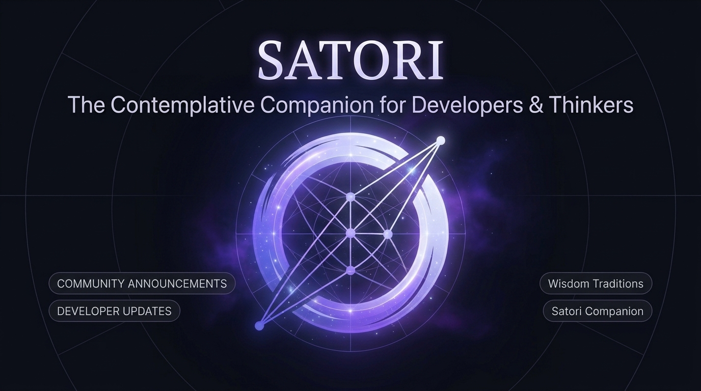

Built to be outgrown. Wisdom that tells you the truth, kindly.
Satori is the open-source wisdom companion for developers, founders, and thinkers navigating the grey zone between daily burnout and clinical care. 18 wisdom traditions, 6-step reflective model, 98% non-activation during pure coding, and 100% local SQLite privacy.
98.0% Coding Non-Activation
Stays 100% silent during syntax, SQL, and terminal execution. Solves concurrent deadlocks first before addressing human fatigue.
One Lens, One Question
No 7-step advice dumps, no sycophantic praise, no uninvited homework. Reframes tensions to return agency to human relationships.
Local SQLite & POSIX Security
Stores structural ≤500 char thematic patterns on your local disk in ~/.satori/memory/. Zero cloud telemetry or model re-training.
Channel Marketing Copywriting Kit
Ready-to-deploy promotional copy customized across developer communities, social platforms, and email blasts.
Hey builders,
Most AI assistants oscillate between sycophantic cheerleading ("You've got this!") and unsolicited therapy derailments in your code editor.
We built Satori because thoughtful adults and developers deserve something different: structured psychological depth without clinical pretense or workflow disruption.
- 18 Philosophical & Clinical Traditions: Stoicism, Zen, Taoism, Ubuntu, IFS, ACT, and somatic grounding.
- 98% Pure-Code Non-Activation: Tested against a 350-case benchmark. Satori never interrupts your coding workflow.
- 100% Local SQLite Privacy Vault: Zero cloud telemetry, zero LLM ad targeting. Your thoughts stay on your machine.
- Built to be outgrown: If Satori works, you will need it less over time, not more.
Install in 30 seconds across Claude Code, Cursor, Windsurf, Antigravity, or your CLI:
Most conversational AI is either a fawning sycophant or an uninvited therapist.
Introducing Satori: an open-source AI wisdom companion built to be outgrown.
• 18 Wisdom & Psychological Traditions
• 6-Step Clinical Reflective Model
• 98% Coding Non-Activation (zero terminal hijacking)
• Local SQLite memory vault in ~/.satori/ (zero telemetry)
Wisdom that tells you the truth, kindly. Free forever under Apache 2.0.
Why do thoughtful founders and engineers hesitate to use AI for reflection?
Because existing models offer either hollow validation or corporate surveillance.
We designed Satori with 8 inviolable constitutional immovables:
1. Honesty before comfort
2. One lens, one question per turn
3. Never bypass difficulty
4. 100% private local-first storage
Satori operates alongside therapy to give you mental clarity when late-night burnout hits, without storing your data in the cloud.
Try it today via CLI or grab the full package on GitHub.
Visual Campaign Assets
Local high-resolution PNG assets hosted under /satori/assets/.